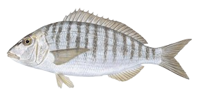

Herrera
| Cuando | Invierno, primavera y verano |
|---|---|
| Lugar | Playas de arena fina, roqueros naturales, playas mixta, espigones y en rompeolas |
| Cebo | Pequeños moluscos y crustáceos como mejillones, cangrejos, coquinas, gusanos, navajas y ermitaños |
| Técnica | Surfcasting |